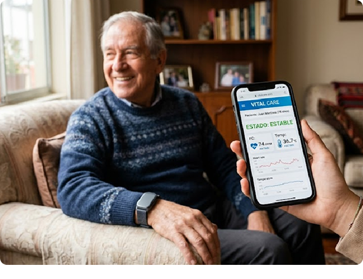
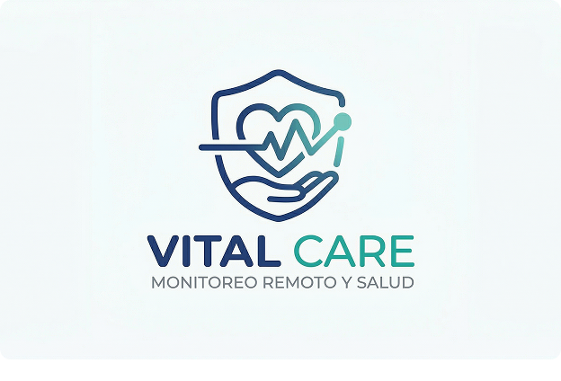

VITAL CARE une tecnología web e IoT para brindar tranquilidad a pacientes con enfermedades crónicas y a sus familias, permitiendo un seguimiento en tiempo real y respuesta oportuna ante emergencias.
Empieza a monitorear ahora
Los controles médicos presenciales son periódicos y no permiten detectar variaciones críticas en los signos vitales de forma oportuna.
Los familiares a menudo trabajan o no residen con el paciente, lo que limita su capacidad de respuesta inmediata ante una emergencia en tiempo real.
Situaciones como fiebre alta o alteraciones cardíacas, al no ser detectadas a tiempo, pueden derivar en complicaciones médicas graves.
Tranquilidad mientras realizas tus actividades diarias.
Seguridad e independencia en su propio hogar.

Somos una startup de ingeniería de software enfocada en el desarrollo de soluciones digitales orientadas al sector salud. Nuestro propósito es reducir la brecha entre los pacientes vulnerables y el acceso a un monitoreo médico continuo, aprovechando tecnologías web e IoT para brindar tranquilidad tanto a los pacientes como a sus familias.
Democratizar el acceso al monitoreo continuo de salud en el hogar, brindando herramientas digitales que permitan una respuesta oportuna ante emergencias médicas.
Ser la plataforma de referencia en monitoreo remoto de salud en Latinoamérica, contribuyendo a mejorar la calidad de vida de los adultos mayores y pacientes con enfermedades crónicas.